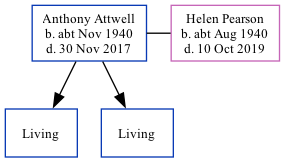

Anthony J Attwell cNov 1940 - 2017
[ Home ] | [ Calendar ] | [ Surnames Index ] | [ Family History ]Anthony Attwell, the husband of Helen Anne Pearson (the cousin on the mother's side of Nigel Horne), was born in Sevenoaks, Kent, England <i>c.</i> Nov 1940<span class="citation">1</span>. He married Helen (with whom he had 2 surviving children <a href="I816.html">Christopher James</a> and <a href="I815.html">Richard Anthony</a>) in Thanet, Kent, England around Feb 1961<span class="citation">2</span>. In 2003, he lived on 117 Cramptons Road in Sevenoaks<span class="citation">3</span>. <p>He died on Nov 30, 2017 in Kent.
Citations
- England & Wales births 1837-2006 - Findmypast
- England & Wales, Marriage Index: 1916-2005 Online publication - Provo, UT, USA: The Generations Network, Inc., 2009.Original data - General Register Office. England and Wales Civil Registration Indexes. London, England: General Register Office. © Crown copyright. Published by permission of the Cont
- UK, Electoral Registers, 2003-2010
Media
England & Wales marriages 1837-2008 - BMD/M/1961/1/AZ/000036/132
England & Wales births 1837-2006 - BMD/B/1940/4/AZ/000028/148
Family Tree
Generated by Ged2Site. Last updated on Jul 20, 2025